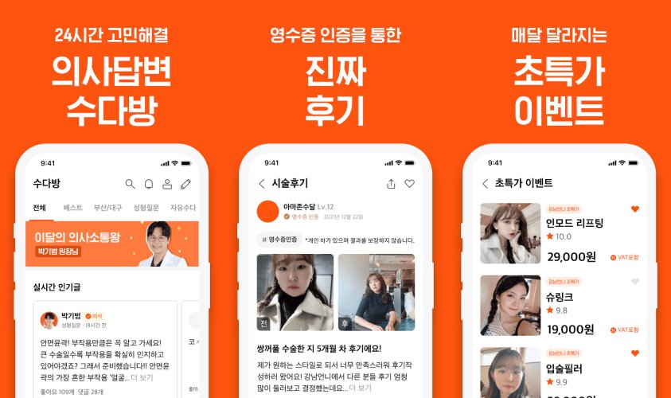

S.01광고비를 늘리지 않고
문의를 5배로
키워드 · 썸네일 · 랜딩 구조 변경 → 월 문의 8 → 40+ · 광고비 동결
병원 소개, 이벤트 페이지,
썸네일. 이 셋만 바꿔서
문의를 5배로
네오커스 · 강남언니 입점 운영
강남역 피부과가
일주일에 문의 한 건?
경쟁사의 10~15% 수준
나부터 '뺏주사'가
처음 듣는 말이었다
검색 키워드를 소비자의 언어로

여긴 강남언니다.
들어온 사람은 이미
시술을 알고 있다
고관여 타겟 — 설명보다 확신

2024년 이후
바뀐 적 없는 썸네일
목록에 직접 넣어 봤다 — 안 보였다

지금의 기준은
건강하고 탄탄한 라인

전후 사진보다
시술 설명이 먼저 나왔다

시술 설명을 걷어내고
공감 체크 다음
곧장 전후 사진
8 → 40+월 상담 문의 ×5 · 바비톡 미러링 0 → 10
PROBLEM
동일 시술을 하는 경쟁 병원은 강남언니에서 월 상담 50건 이상, 우리 병원은 6~8건 — 경쟁사의 10~15% 수준이었다. 내부에서는 "광고비를 안 써서"로 정리됐고 추가 예산도 없었다. 강남역에 있는 피부과가 일주일에 문의 한 건이라는 게 이상했다. 들여다보니 이벤트 페이지와 썸네일은 2024년 이후 수정 이력이 없었고, 페이지는 병원 자체 네이밍인 '뺏주사' 중심의 시술 설명 구조였다.
발견
나부터 '뺏주사'가 처음 듣는 말이었다. 해외에선 알려졌지만 국내 인지도가 낮아, 이름만으로는 지방분해 시술인지 인식되지 않는다. 내가 소비자라면 뭘 검색할까 — '지방분해'였다. 강남언니에도 검색과 알고리즘이 있고, 팀의 목표는 브랜딩이 아니라 환자 확보였다. 키워드를 소비자의 언어로 바꿨다.
가설
강남언니 유저는 시술을 확정하고 병원을 고르러 온 고관여 타겟이다. 이들에게 필요한 건 시술 설명이 아니라 "이 병원이면 된다"는 확신 — 그런데 상세 페이지도 '뺏주사'부터 어필하고 있었다. 썸네일은 다른 병원들 목록 사이에 직접 넣어 확인했는데 눈에 들어오지 않았다. 가슴·허리를 강조하는 예전 트렌드의 비키니 이미지였고, 타 의원 지방분해 썸네일들은 팔뚝 라인과 탄탄한 배 — 건강미 중심이었다.
수정
키워드는 '지방분해'로, 썸네일은 현재 트렌드의 건강한 바디라인으로 교체했다. 상세 페이지는 시술 설명을 걷어내고 '지방분해'를 타이틀 전면에 올린 뒤, "내 얘기 같다면?" 공감 체크리스트 다음 곧장 3주 경과 전후 사진이 나오는 구조로 — 설명 대신 확신을 먼저 보여주도록 바꿨다.
결과
월 상담 문의 8건 → 40건 이상. 강남언니 담당자도 '지방분해' 키워드와 시술 부위 명시가 플랫폼 알고리즘 노출 증가로 이어졌다고 피드백했다. 같은 구성을 바비톡에 미러링해 0건 → 최대 10건. 광고비는 늘리지 않았다.
LIMITATION
같은 방식으로 스킨부스터의 수요도 확인됐지만 병원 내부 운영 인력 부족으로 확장하지 못했다. 문의가 늘어난 만큼 부재중도 늘었는데, 즉시 예약이 아니라 신청 후 병원에서 연락해 확정하는 구조라 타이밍을 놓친 유저의 이탈을 막을 수 없었다. 성과는 개선했지만 실행 리소스와 예약 시스템의 한계를 함께 경험한 케이스.